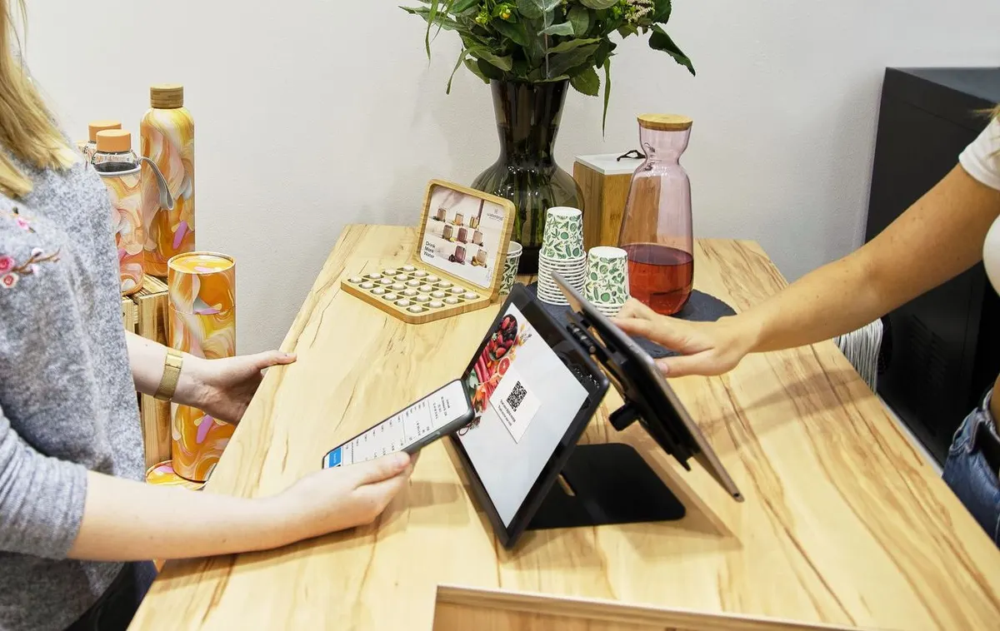
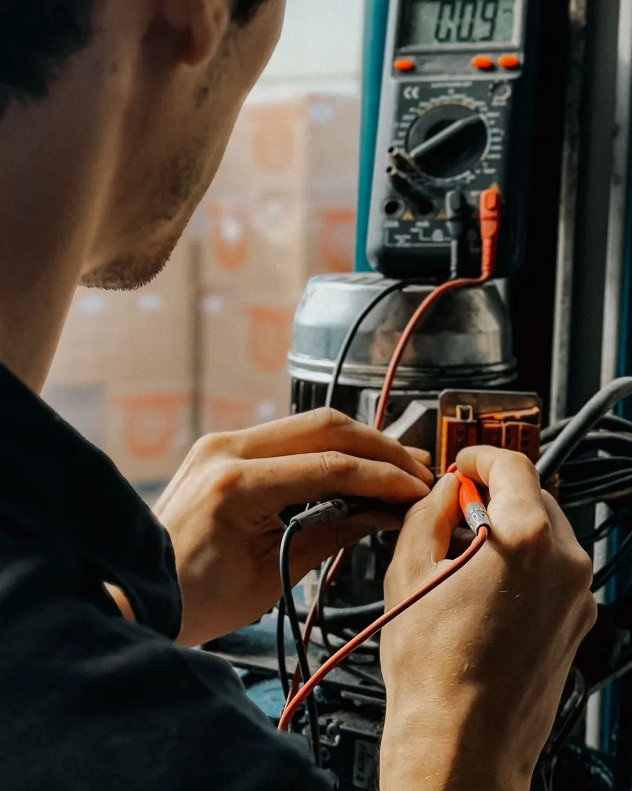

Tarefas repetitivas
Atividades que consomem tempo e poderiam seguir um fluxo mais claro.

Automação para estabelecimentos
Projetos para reduzir tarefas repetitivas, organizar rotinas e dar mais previsibilidade à operação do seu estabelecimento.
Diagnóstico antes da proposta.

O serviço
Projetos para reduzir tarefas repetitivas, organizar rotinas e dar mais previsibilidade à operação.
Mapeamos a rotina atual, identificamos o que se repete e definimos o que faz sentido automatizar. A automação é implantada de forma acompanhada, respeitando o funcionamento do estabelecimento.
O objetivo não é adicionar complexidade. É organizar o que já acontece para que a operação dependa menos de controle manual e mais de um processo claro.
Problemas que resolve
Quando a rotina depende de controle manual e tarefas repetitivas, a operação perde tempo e previsibilidade. A automação atua nesses pontos.
Atividades que consomem tempo e poderiam seguir um fluxo mais claro.
Quando o processo está só na cabeça da equipe, a operação fica vulnerável.
Sem uma rotina definida, cada dia funciona de uma forma.
Informações e tarefas se repetem porque o processo não está organizado.
Como funciona
A automação é construída a partir do que o estabelecimento já faz. O escopo é definido antes da execução.
Entendemos o que acontece hoje, onde estão as tarefas repetitivas e quais são as prioridades.
Delimitamos o que será automatizado, o que continua humano e como a implantação será feita.
A solução é colocada em prática com acompanhamento e ajustes conforme a operação.
Verificamos se a rotina ganhou clareza e se o processo faz sentido no dia a dia.
Benefícios
O ganho não está em usar mais tecnologia. Está em organizar o que já existe para a rotina funcionar melhor.
Etapas do trabalho
O caminho é direto: entender a necessidade, definir o escopo, propor a solução e executar com acompanhamento.
Você entra em contato e conta o que o estabelecimento precisa.
Entendemos a rotina, o contexto e o que pode ser melhorado.
Apresentamos a solução, o escopo e os próximos passos.
Implementamos a automação com acompanhamento.